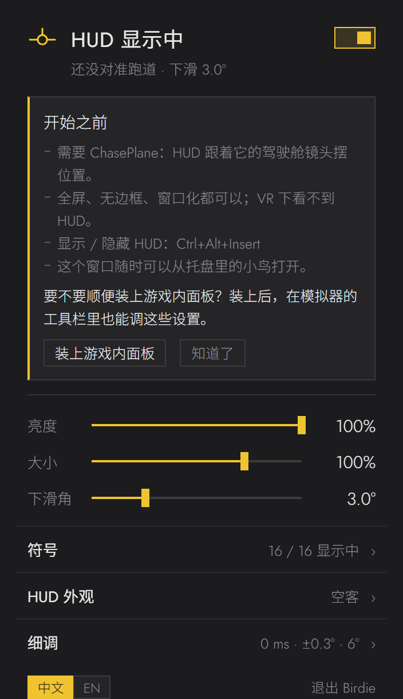
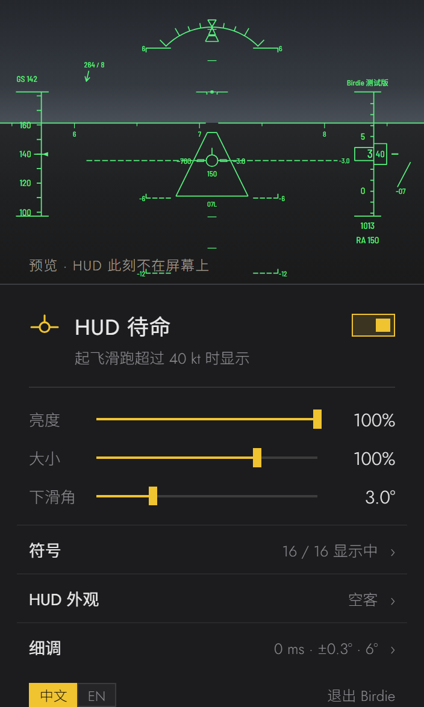
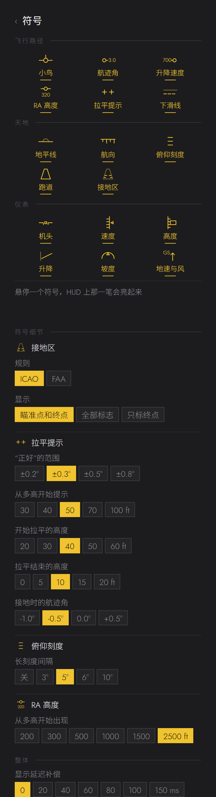
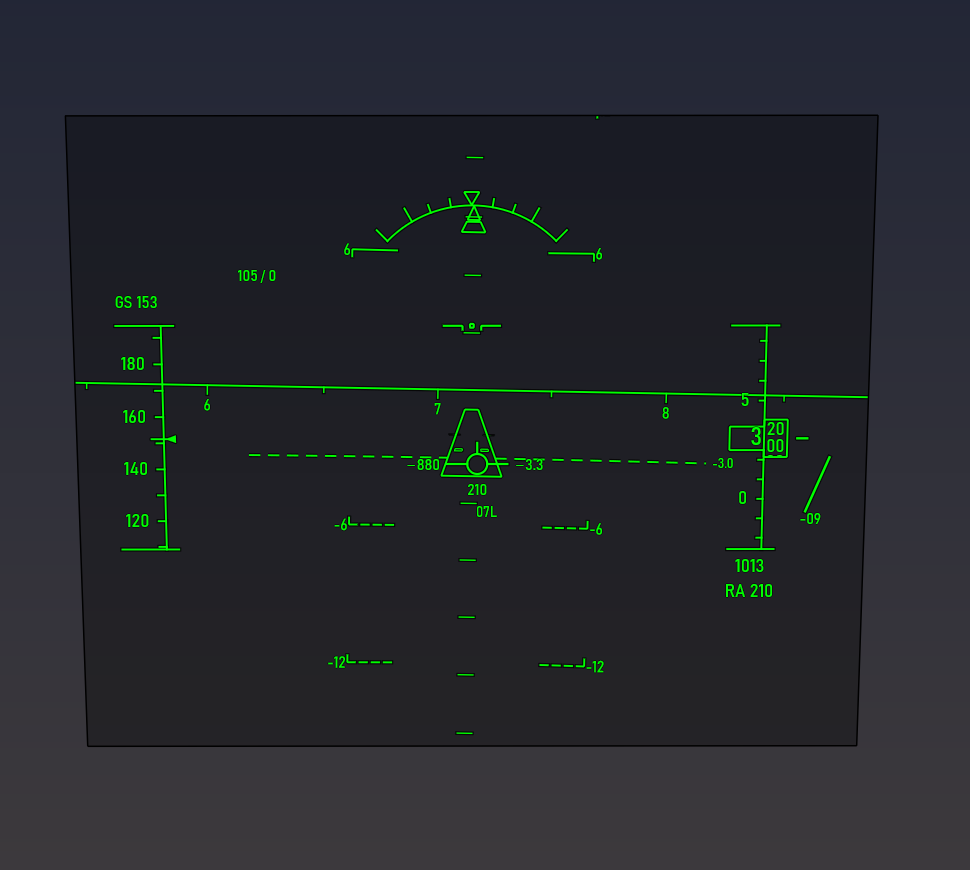
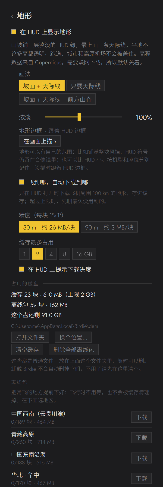
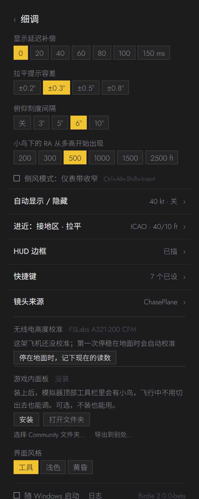
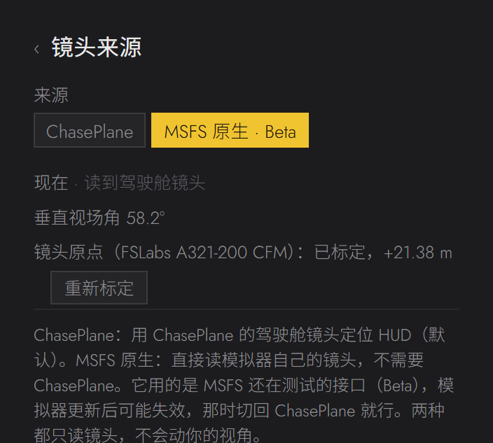

使用说明
微软模拟飞行 2024 的平视显示器（HUD）覆盖层 · 版本 {{version}}
1Birdie 是什么
2安装和第一次运行
3认识 HUD
4进近和落地
5什么时候显示
6设置窗口
7HUD 外观
8地形
9细调
10快捷键
11问题排查
12升级、卸载、许可
1Birdie 是什么
Birdie 是一个画在微软模拟飞行 2024（MSFS 2024）画面上面的平视显示器。它是一个独立的透明窗口，鼠标点击会穿过它，用 GPU 绘制；它不往模拟器里注入任何东西，数据全部来自 SimConnect。
核心符号是飞行路径矢量，也就是"小鸟"：它标出飞机实际飞去的方向。在 2D 屏幕上很难判断下滑道和接地点，小鸟补上了这条线索：把小鸟放在跑道的瞄准点上，飞机就朝那里飞。
围绕小鸟，Birdie 画出两类符号：
- 与外界景物对齐的保形符号：地平线、航向刻度、俯仰刻度、下滑参考线、跑道轮廓和接地区标志。它们贴在真实的地平线和跑道上，随视角移动。
- 固定在机体上的仪表：速度带、高度带、升降速度、坡度刻度、无线电高度、拉平提示等。
默认是空客的样子；另有波音、战斗机、极简三套预设，每个元素的样式、大小、位置、颜色都能单独设置（第 7 章）。另有两样可选、默认关着：在 HUD 范围里铺一层背景色（第 7 章），以及在 HUD 上画出地形（第 8 章）。
Birdie 只做 HUD 这一件事。
2安装和第一次运行
需要
- Windows 10 / 11 64 位。
- MSFS 2024，全屏、无边框、窗口化都可以（MSFS 2024 只有 DX12，全屏下 HUD 照样叠得上去）。VR 下看不到 HUD：它是盖在模拟器上面的另一个窗口。
- ChasePlane（Parallel 42），驾驶舱视角（默认）。Birdie 从 ChasePlane 读镜头角度、缩放和眼点，所以不需要标定。没有 ChasePlane 的话，可以改用 MSFS 原生镜头（Beta，第 9 章"镜头来源"）。
- 机型不限。目前没有飞行指引（FD）。
安装
- 把
Birdie-{{version}}.zip 整个解压到一个单独的文件夹，例如 D:\Birdie。不要在压缩包里直接运行：SimConnect.dll 必须在 Birdie.exe 旁边。
- 双击
Birdie.exe。程序没有代码签名，Windows 可能提示"Windows 已保护你的电脑"：点"更多信息"→"仍要运行"。
- 托盘里出现小鸟。第一次运行会自动打开设置窗口，首页顶上是"开始之前"卡片。

第一次运行
"开始之前"卡片提醒三件事：HUD 跟着驾驶舱镜头摆位置，默认读 ChasePlane，没有的话在"细调 → 镜头来源"改用 MSFS 原生镜头；VR 下看不到 HUD（全屏、无边框、窗口化都行）；显示 / 隐藏 HUD 的快捷键（默认 Ctrl+Alt+Insert）。
卡片里可以顺便装上游戏内面板：装好后，模拟器顶部工具栏里会有小鸟，飞行中不用切出去也能调设置。游戏内面板是可选的，不装也能用。
装面板时，Birdie 会从 UserCfg.opt 自动找到 Community 文件夹（商店版和 Steam 版都行）。装好后重启一次模拟器，小鸟才会出现在工具栏里。
以后随时可以单击托盘里的小鸟打开设置窗口。
进模拟器
- 先开 MSFS 2024 和 ChasePlane（用 MSFS 原生镜头时不用开 ChasePlane）。Birdie 开着就行，模拟器启动后它会自己连上。
- 进驾驶舱视角，HUD 就显示出来。没看到的话，按 Ctrl+Alt+Insert。
3认识 HUD
 空客预设，离地约 90 ft，对准跑道进近。HUD 由 Birdie 自己的绘制代码离线画出，背景是纯色。
空客预设，离地约 90 ft，对准跑道进近。HUD 由 Birdie 自己的绘制代码离线画出，背景是纯色。
| 符号 | 含义 |
|---|
| 1 | 小鸟（飞行路径矢量） | 飞机实际飞去的方向。图中它正压在瞄准点上。 |
| 2 | 航迹角 | 小鸟右边，当前的飞行路径角（°），负数表示下降。 |
| 3 | 升降速度 | 小鸟左边，ft/min。 |
| 4 | 小鸟下的 RA | 无线电高度，低于设定高度（默认 2,500 ft，和空客 HUD 一样）才出现。 |
| 5 | 下滑参考线 | 按设定的下滑角（默认 3.0°）画在地面上的虚线。 |
| 6 | 跑道轮廓 | 你对准的那条跑道，位置来自模拟器自己的机场数据。下面写着跑道号。 |
| 7 | 接地区标志 | 按 ICAO 或 FAA 规则画出瞄准点标志，以及接地区结束的地方（第 4 章）。 |
| 8 | 地平线 | 真实的地平线。 |
| 9 | 航向刻度 | 地平线上的磁航向，数字是航向的十位，两位数（07 = 070°）。 |
| 10 | 俯仰刻度 | 按设定间隔（默认 5°，和空客 HUD 一样）的俯仰梯，实线在地平线上，虚线在下。 |
| 11 | 短刻度 | 每 2.5° 一条的短刻度。 |
| 12 | 机头符号 | 机头指向。读俯仰和坡度时以它为准。 |
| 13 | 坡度刻度 | 顶上的坡度刻度（10°、20°、30°）和指针，指针下的小梯形是侧滑。坡度超过 35° 时加上弧线和 45°、67° 刻度。 |
| 14 | 速度带 | 指示空速（kt），三位数刻度（120、080）。空心三角指着当前速度；三角上方或下方的细长空心框是速度趋势（10 秒后的速度）。 |
| 15 | 风与地速 | 风向 / 风速和风的箭头（箭头相对机头）。地速在速度带右边，地面和空中都显示（真 A320 HUD 只在地面上显示）。 |
| 16 | 高度带 | 气压高度，刻度是三位数的百英尺（005 = 500 ft）；读数框里百位以下是滚动的数字。 |
| 17 | 气压 | 高度带下面：气压设定（hPa）。关掉“小鸟下的 RA”时，无线电高度也显示在这里。 |
| 18 | 升降速度指针 | 高度带右边，数字是百 ft/min。 |
每个符号都能在设置窗口的"符号"页里单独开关（第 6 章）。
4进近和落地
把小鸟放在瞄准点上
进近时，用操纵把小鸟放到跑道的瞄准点上（两块大白块之间），并保持住。小鸟在哪，飞机就往哪飞：小鸟停在瞄准点上，就是一条稳定的下滑道。小鸟往跑道远端跑，说明下滑道变浅；往近端跑，说明变陡。
下滑参考线标出设定下滑角（默认 3.0°）在地面上的位置。小鸟压在参考线上，下滑角就是设定值。参考线的角度可以在首页的"下滑角"里调，也可以用 Ctrl+Alt+PgUp / PgDn 每次改 0.1°，按机场的下滑角来设。
跑道和接地区
Birdie 自动挑出你对准的跑道，画出它的轮廓。位置来自模拟器自己的机场数据，所以和画面上的跑道对得上。接地区标志按跑道长度取规范：
- ICAO（附件 14）：跑道长 2400 m 以上时，瞄准点从入口算起 400 m；接地区到 900 m 结束（最多跑道的三分之一）。
- FAA（AC 150/5340-1）：瞄准点从入口算起 1,020 ft；接地区到 3,000 ft 结束。
显示方式可选"瞄准点和终点"（默认）、"全部标志"、"只标终点"。终点是跑道两侧的一对短实块。
已知问题：在部分跑道上，Birdie 画的瞄准点标志和地景里的大白块相比，前后约差半块。
拉平提示
离地 50 ft 以下（可调），小鸟上方会闪烁拉平提示。它比较你现在的航迹角和一条理想的拉平曲线：40 ft 开始拉平，到 10 ft 时航迹角收到 −0.5°（三个数都可调，第 6 章"符号细节"）。
"正好"的范围可以在"符号细节"里调（默认 ±0.3°）。跑道有坡度时，Birdie 会把坡度扣掉再比较。
侧风模式

大侧风进近时，飞机带着偏流角，小鸟和跑道会偏到视野一侧，可能被速度带或高度带挡住。按 Ctrl+Alt+Shift+Insert 打开侧风模式：速度带和高度带变短、往外移，升降速度指针不画，把视野中间让出来。再按一次恢复。
5什么时候显示
按 Ctrl+Alt+Insert 打开或关闭 HUD。HUD 打开时，Birdie 还会按情况自己隐藏，条件恢复后自动回来。设置窗口首页顶上的状态行会说明现在的情况：
| 状态 | 原因 | 怎么办 |
|---|
| HUD 显示中 | 正常显示；旁边是对准的跑道和下滑角。 | |
| HUD 待命 | 开了"滑跑超过这个速度才显示"，在地面上速度还没到设定值。 | 起飞滑跑时自动出现；或在"自动显示 / 隐藏"里关掉。 |
| HUD 暂时隐藏 | 视线转开了（转头看侧面）。 | 转回前方就出现。 |
| HUD 不显示 | 外部视角。 | 回到驾驶舱视角。 |
| HUD 暂停 | MSFS 不在前台，或者模拟器暂停了、数据停了。 | 切回模拟器 / 取消暂停。 |
| HUD 自动隐藏 | 开了"高空自动隐藏"，无线电高度高于设定值。 | 降到设定高度以下就回来。 |
| 没检测到 ChasePlane | 镜头来源是 ChasePlane，但没读到它的驾驶舱视角。 | 启用 ChasePlane，进它的驾驶舱视角；或者在"细调 → 镜头来源"改用 MSFS 原生镜头。 |
| 读不到 MSFS 镜头 | 镜头来源是 MSFS 原生，但模拟器没送来镜头数据。 | 进驾驶舱视角；看"细调 → 镜头来源"里的说明；还不行就切回 ChasePlane。 |
| 没连上模拟器 | MSFS 还没开。 | 打开 MSFS 后自动连上。 |
| HUD 已关闭 | 你把 HUD 关了。 | 按快捷键或点首页的开关。 |
自动显示 / 隐藏
在"细调 → 自动显示 / 隐藏"里：
- 滑跑超过这个速度才显示（默认关；打开后默认 40 kt）：在地面上速度不够时 HUD 不显示，起飞滑跑时自动出现。可选 20–80 kt。
- 高空自动隐藏（默认关）：无线电高度高于设定值（默认 2,500 ft）并持续一段时间（默认 30 s）后隐藏；一降到设定值以下就回来。
6设置窗口
所有设置都在一个页面里，改了立刻生效、自动保存。打开它的方式：
- 单击托盘里的小鸟：打开 Birdie 自己的设置窗口（用 WebView2，Windows 11 自带；没有时会在浏览器里打开）。
- 右键托盘小鸟：菜单里有"打开面板""显示 HUD""退出"。
- 模拟器工具栏里的小鸟：装了游戏内面板时，飞行中直接在模拟器里调。内容和设置窗口完全一样。

首页
- 预览：HUD 不在屏幕上时（比如在地面待命），顶上会显示一张预览，样式跟着你的设置变。HUD 在屏幕上时，直接看真 HUD。
- 状态行和开关：现在的状态（第 5 章），右边的开关打开 / 关闭 HUD。
- 亮度（25–100%）、大小（60–115%）、下滑角（2.0–5.9°）。
- 符号、HUD 外观、地形、细调：进入各自的页面。
- 底部：界面语言（中文 / EN）和退出 Birdie。

符号
17 个符号分三组：飞行路径（小鸟、航迹角、升降速度、RA 高度、拉平提示、下滑线）、天地（地平线、航向、俯仰刻度、跑道、接地区）、仪表（机头、速度、高度、升降、坡度、地速与风）。
点一下开关一个符号。鼠标悬停在某个符号上时，HUD 上对应的那一笔会亮起来，其余变暗，方便对照。
符号细节：图标下面是几个符号自己的设置，每段带着那个符号的小图标；符号关着时这一段变暗，但仍然能调。
| 接地区 | 规则（ICAO / FAA）和显示方式（瞄准点和终点 / 全部标志 / 只标终点），见第 4 章。 |
| 拉平提示 | "正好"的范围（默认 ±0.3°）、从多高开始提示（50 ft）、开始拉平的高度（40 ft）、拉平结束的高度（10 ft）、接地时的航迹角（−0.5°）。 |
| 俯仰刻度 | 长刻度间隔：关、3°、5°（默认）、6°、10°。 |
| RA 高度 | 从多高开始在小鸟下显示无线电高度，默认 2,500 ft。 |
| 整体 · 显示延迟补偿 | HUD 总比模拟器画面晚一点。这里设的毫秒数会把姿态往前外推，抵消延迟。转弯时 HUD 落后就加一点（0–150 ms，默认 0）。 |
7HUD 外观
整套风格
一键换一整套样式：布局、各部分样式、颜色和线条一起换（开场 / 退场动画不变）。极简预设还会关掉几个符号，可以在"符号"页里再打开。换了之后仍可以逐项再改，改过就显示为"自定义"。
各部分的样式
| 飞行路径符号 | 空客、波音、战斗机、极简、圆环、十字 |
| 速度 / 高度 | 空客（刻度带）、波音（刻度带 + 读数框）、只要读数框 |
| 升降速度 | 指针、数字 |
| 俯仰刻度 | 空客、波音、战斗机、极简 |
| 航向 | 地平线上、底部罗盘、顶部航向带 |
| 坡度 | 空客、波音、底部 |
"加速度尖括号（波音）"在小鸟左翼旁画一个尖括号，在上面表示正在加速。
颜色与线条
颜色（绿、柔绿、黄绿、白、青、琥珀、品红或自定）、字体（Bahnschrift、Consolas、Segoe UI、Arial Narrow）、描边（线条下的暗边，帮助在亮背景上看清）、光晕。
布局
侧风模式的开关就在"布局"下面（第 4 章）。每组仪表（速度带、高度带、升降速度、地速与风、坡度刻度）都能上下左右移动、改长度和大小；还能整体改左右张开、文字大小、线宽，以及小鸟、机头符号、俯仰刻度宽度和航向的位置。单位是度（HUD 上的角度）。调的时候 HUD 会一直显示，在地面上也能看；"恢复默认布局"一键还原。
开场 / 退场
HUD 出现和消失时的动画：无、淡入淡出（默认）、光圈、开机、扫描、组装；时长可选 0.5–2 倍。在驾驶舱视角下可以点"预览开场 / 退场"看效果。
HUD 边框
HUD 可能超出驾驶舱的挡风玻璃。在"HUD 外观 → HUD 边框"里，驾驶舱视角下点"在画面上描"，沿着窗框点出一个多边形，按 Enter 保存、Esc 放弃。之后 HUD 只画在边框里，最后 1° 慢慢淡出；改缩放、转头时边框都贴着窗框。边框按机型和座位分别保存，另一座没描时按这一座镜像。用 MSFS 原生镜头时，要等镜头原点标定好才能描（眼点读数不对时 Birdie 会拒绝，免得存错座位）。如果有仪表落在边框外，页面会提示缩到多少能放下。
背景色
在 HUD 的范围里铺一层半透明的颜色，像真飞机合像镜那块玻璃。默认关着，在"HUD 外观"页最下面打开。范围跟着 HUD 走：没描边框时是整块合像镜，描过边框（本章"HUD 边框"）就是边框里面。地形和所有符号都画在它上面。
 跟随 HUD 色，浓淡 12%，羽化边缘
跟随 HUD 色，浓淡 12%，羽化边缘

暗片，浓淡 35%，细边线
- 颜色：跟随 HUD（默认）、深绿玻璃、暗片、琥珀、蓝；也可以用"色相"滑块自己挑一种。
- 浓淡：2–50%，默认 10%。Birdie 只能在模拟器画面上盖一层颜色：亮的颜色会把暗处提亮（夜里像发光），深的颜色会把画面压暗。
- 边缘：硬边、羽化（默认，边上 1° 慢慢淡出）、宽羽化（3°）、细边线（硬边外加一条同色细线）。
- 跟着 HUD 一起出现、消失，也跟着 HUD 亮度一起变：用亮度滑块或快捷键调暗 HUD 时，背景色一起变淡。
8地形

在 HUD 上画出前方的山：山坡铺一层很淡的 HUD 色，最上面一条天际线。平地不论多高都是透明的，跑道、城市和高原机场不会被盖住。在首页点"地形"进入，默认关着。
高程数据来自欧盟的 Copernicus 数字高程模型，要联网下载，所以第一次打开后要等一会儿才有地形。
画法和浓淡
- 画法：坡面 + 天际线（默认）、只要天际线、坡面 + 天际线 + 前方山脊。
- 浓淡：20–200%，默认 100%。
- 地形边框：地形可以有自己的范围，比如铺满整块风挡，而 HUD 符号仍留在合像镜里；也可以比 HUD 小。点"在画面上描"，描法和 HUD 边框一样（第 7 章）。没描时跟着 HUD 边框。按机型和座位分别保存。
下载和磁盘
- 飞到哪，自动下载到哪（默认开）：HUD 打开时，Birdie 下载飞机周围 100 km 的地形，存进缓存。HUD 上会提示下载进度（可以关掉提示）。
- 精度：30 m（每块 1°×1° 约 26 MB，默认）或 90 m（约 3 MB）。
- 缓存上限：1、2（默认）、4、8、16 GB。超过上限时，先删最久没用到的块。
- 离线包：把常飞的地区提前下好，飞行时不用等，也不会被缓存清理掉。列表里有中国各区、日本、韩国、阿尔卑斯、挪威、美国西部山区、新西兰等。
- 自己下载：Copernicus 的
.tif（或整包 .zip / .tar）放进 import 文件夹，再点"导入"。
- 数据默认在
%LOCALAPPDATA%\Birdie\dem，可以"换个位置"。都是普通文件，随时可以在这一页清空。
换位置、导入只能在 Birdie 的设置窗口里做（托盘里的小鸟），游戏内面板里没有这两项。
地形只用于模拟飞行，不能用于真实导航。
9细调

这一页放和 HUD 画面无关的设置：自动显示 / 隐藏（第 5 章）、快捷键（第 10 章）、镜头来源，以及无线电高度校准、游戏内面板、界面风格。各符号自己的设置在"符号"页（第 6 章），HUD 边框和侧风模式在"HUD 外观"页（第 7 章）。

镜头来源
Birdie 要知道你的眼睛在驾驶舱的哪里、往哪看、视角多大，才能把 HUD 叠到正确的位置。这一页选从哪里读：
- ChasePlane（默认）：用 ChasePlane 的驾驶舱镜头，不需要标定。
- MSFS 原生 · Beta：直接读模拟器自己的镜头，不需要 ChasePlane。它用的是 MSFS 还在测试的接口，模拟器更新后可能失效，那时切回 ChasePlane 就行。
两种都只读镜头，不会动你的视角。"现在"一行显示读到了什么，以及垂直视场角。
镜头原点：用 MSFS 原生镜头时，每架飞机第一次要标定一次镜头原点。在地面停稳几秒，或者在空中按一下暂停，Birdie 会自己标定，HUD 上提示"已标定"。没标定前跑道框会偏，HUD 会提醒一次。标定结果按机型记住；觉得不准可以点"重新标定"。
无线电高度校准
有的机型停在地面时无线电高度不是 0。Birdie 按机型分别记一个偏差：第一次停稳在地面时自动校准，也可以手动点"停在地面时，记下现在的读数"，或者清除。
其他
- 游戏内面板：安装 / 更新 / 移除 / 打开文件夹；找不到 Community 文件夹时可以自己选，用插件管理工具的话可以"导出到别处"。Birdie 升级后，启动时会自动把已装的面板换成新版本（重启模拟器生效）。
- 界面风格：工具（默认）、浅色、黄昏。只改设置窗口的样子，不改 HUD。
- 随 Windows 启动、日志（打开日志文件）、版本号。
10快捷键
快捷键在任何窗口里都有效。在"细调 → 快捷键"里点右边的组合键，再按下新的；Esc 不改，退格键清除。和别的程序重复的会标"被占用"，换一个就好。组合键必须带 Ctrl、Alt 或 Shift。
| 动作 | 默认 |
|---|
| 显示 / 隐藏 HUD | Ctrl+Alt+Insert |
| 侧风模式 | Ctrl+Alt+Shift+Insert |
| 下滑参考线 +0.1° / −0.1° | Ctrl+Alt+PgUp / Ctrl+Alt+PgDn |
| 显示延迟补偿 +10 / −10 ms | Ctrl+Alt+Home / Ctrl+Alt+End |
| 退出 Birdie | Ctrl+Alt+Shift+End |
| 亮度 ±5%、大小 ±5%、换下一套风格、播放开场、打开设置窗口 | 未设，可以自己设 |
用快捷键改设置时，屏幕左上角会短暂显示新的值。
11问题排查
| 现象 | 原因和办法 |
|---|
| 完全看不到 HUD | 先看设置窗口首页的状态行（第 5 章）。最常见的是：不在驾驶舱视角、HUD 被快捷键关了、开了自动显示而在地面上还没到设定速度。 |
| "没检测到 ChasePlane" | 确认 ChasePlane 在运行，并切到它的驾驶舱视角。没有 ChasePlane 的话，在"细调 → 镜头来源"改用 MSFS 原生镜头。 |
| 用 MSFS 原生镜头时跑道框偏 | 镜头原点还没标定，或者标定得不对。在地面停稳几秒或在空中暂停一下；还是偏就在"镜头来源"里点"重新标定"。 |
| "眼点读数不对，先不能描边框" | 同上：先把镜头原点重新标定好，再描边框。 |
| 描的边框在屏幕上是梯形，不是长方形 | 正常。边框不在屏幕上，而是在一个固定在机身上、正对机头的平面上（和 HUD 是同一个面），所以转头、缩放时它才贴得住窗框。驾驶舱视角通常往下看几度（ChasePlane 默认低头约 7°），从斜上方看这个平面，竖边就会往下收拢，上宽下窄；在平面上它仍是你描的形状。 |
| 边框拉到最外面也到不了屏幕左右边缘 | 边框的点最远到正前方左右约 46°、上下约 46°。16:9 屏幕一般够用；21:9、32:9 超宽屏的两边超出这个范围，拉不过去。HUD 边框沿前风挡窗框描，用不到那么宽，不影响使用。 |
| 打开了地形但看不到 | 要联网下载，HUD 打开时才下载，第一次要等一会儿（HUD 上有下载提示）。山很远或是平地时本来就不画。看"地形"页的下载状态。 |
| 启动时提示找不到 SimConnect.dll | 没有把 zip 整个解压。SimConnect.dll 要和 Birdie.exe 在同一个文件夹。 |
| "Windows 已保护你的电脑" | 程序没有代码签名。点"更多信息"→"仍要运行"。 |
| 设置在浏览器里打开 | 电脑上没有 WebView2 运行时（Windows 10 可能没有）。功能一样；想要独立窗口可以安装 Microsoft Edge WebView2 运行时。 |
| 跑道框左右或前后偏 | 16:10 屏幕和部分机型的眼点还在验证中。请提一个 Issue，附上截图、机型、屏幕尺寸和日志。 |
| RA 在地面上不是 0 | 停稳后点"停在地面时，记下现在的读数"（第 9 章）。 |
| 转弯时 HUD 跟不上 | 加一点显示延迟补偿（第 6 章"符号细节"），每次 10–20 ms 试。 |
| 工具栏里没有小鸟 | 装完游戏内面板要重启模拟器；在"细调 → 游戏内面板"里看状态和路径。 |
| 快捷键没反应 | 可能被别的程序占用了，在"快捷键"页里换一个。 |
日志和反馈
日志在 %APPDATA%\Birdie\birdie.log（"细调 → 日志"可以直接打开），设置在同一个文件夹的 settings.json。反馈问题请到 https://github.com/Xuan0876/birdie-hud/issues 开一个 Issue，写清楚做了什么、看到了什么，附上日志、机型、屏幕尺寸，有截图更好。
12升级、卸载、许可
升级
退出 Birdie（右键托盘小鸟 → 退出），用新版本的文件覆盖原来的文件夹，再启动。设置会保留；装过的游戏内面板会自动更新，重启模拟器后生效。
卸载
- 装过游戏内面板的话：细调 → 游戏内面板 → 移除。
- 开过"随 Windows 启动"的话先关掉，然后退出 Birdie。
- 用过地形的话：在"地形"页清空缓存、删除离线包（或者直接删
%LOCALAPPDATA%\Birdie\dem，换过位置就删新位置）。
- 删除 Birdie 所在的文件夹。设置和日志在
%APPDATA%\Birdie，也可以一起删掉。
已知限制
- HUD 比它对应的模拟器画面晚一点显示；显示延迟补偿可以抵消大部分。
- 不支持 VR。模拟器自己的截图和"游戏捕获"录像里没有 HUD，录像请用显示器捕获。
- 默认用 ChasePlane；MSFS 原生镜头还是 Beta，模拟器更新后可能失效。没有飞行指引（FD）。
许可与署名
Birdie 是自由软件，按 GNU 通用公共许可证第 3 版（GPL-3.0）发布，不提供任何担保。源代码：https://github.com/Xuan0876/birdie-hud。HUD 的版式参考了 FlyByWire A32NX 的 HUD（GPL-3.0）；第三方组件的许可见发布包里的 THIRD_PARTY_NOTICES.md 和 licenses 文件夹。
地形的高程数据：produced using Copernicus WorldDEM-30 / -90 © DLR e.V. 2010–2014 and © Airbus Defence and Space GmbH 2014–2018 provided under COPERNICUS by the European Union and ESA; all rights reserved。Copernicus 计划的主管机构对这些数据的任何使用均不承担责任，也没有认可 Birdie。
Microsoft Flight Simulator、ChasePlane、FlyByWire、FSLabs、Fenix、Airbus、Boeing 是各自所有者的商标；Birdie 与它们没有关联，也没有得到它们的认可。
Birdie by Naux, built together with Claude Opus 5.5 (Anthropic).